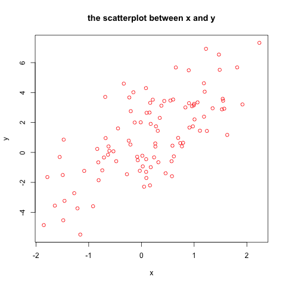

Lecture 5: An Introduction to R
Table of Contents
1 Getting Started with R
1.1 Installation
Install the base system of R
The installation files can be downloaded from http://cran.r-project.org/mirrors.html. You can download for Windows, OS X, or Linux(ubuntu).
Install RStudio
The base R comes with a simple GUI environment, while RStudio is more user-friendly and provides many powerful functionalities.
RStudio can be downloaded from http://www.rstudio.com/products/rstudio/download/
The environment of RStudio
The window of RStudio looks like Figure 1

Figure 1: The Window of RStudio
1.2 Packages
The base R system only installs the core packages that support very basic functions. One of the strength of R is that there are many contributed packages written by the community of R users.
To install a contributed package, we use the command
install.packages("names of packages"). After installing a package,
we need to invoke it every time we use it by the command
library(name of a package).
For example, we need to install a package called AER, which include some other packages that are used in the book Applied Econometrics With R. To install it, type
1.3 Help
R is well-documented software. Help on any function may be accessed
using either help() or ?.
If you can not remember the accurate name of a function, you can even
guess by using help.search() or ?? or apropos().
Any time you encounter a problem using R which cannot be solved by
help command, there are at least two places you can resort to.
- the mailing list of R: http://www.r-project.org/mail.html
- google, yahoo, or bing: quite often you will get an answer to your
question in a website called
stackoverflow.
2 Basics
2.1 R as a calculator
Standard arithmetic operators
R supports the following arithmetic operators
+, -, *, /, ^, %%, %/%
Hence,
> 1 + 1 [1] 2 > 2^3 [1] 8 > 5 %% 2 [1] 1
Mathematical functions
R also have many built-in mathematical functions, such as, log(),
exp(), sin(), sqrt(), min(), etc.
> log(exp(sin(pi/4)^2) * exp(cos(pi/4)^2)) [1] 1
2.2 Vector operations
Vector is the basic unit in R, from which other data structure,
matrix, factor, list, data.frame.
Generate a vector
A vector can be generated by the function c(), which can also be
used to concatenate two vectors
> x <- c(0.3, 1.5, 7.3, 2) > y <- c(3, 2, 1) > (z <- c(x, y)) [1] 0.3 1.5 7.3 2.0 3.0 2.0 1.0
Note that by concatenating x and y, integers are converted to
floating point numbers.
The symbol <- is to assign a value to a variable, for instance, x
in this case.
The elements in a vector must have the same mode (data types),
including numeric, character, and logical.
student.names <- c("John", "Mary", "Bob", "Ann")
student.male <- c(TRUE, FALSE, TRUE, FALSE)
We can get the length of a vector by length().
> length(x) [1] 4
Patterned vectors
A vector can also be generated by the functions rep(), seq(), and
:.
ones <- rep(1, times = 3) even <- seq(from = 2, to = 20, by = 2) years <- 1985:2005 rep13 <- rep(1:3, times = 3)
Vector arithmetic
Arithmetic operators and mathematical functions can be applied to vector in a element-by-element fashion in R.
> x [1] 0.3 1.5 7.3 2.0 > 2 * x + 3 [1] 3.6 6.0 17.6 7.0 > log(x) [1] -1.2039728 0.4054651 1.9878743 0.6931472
Subsetting vectors
Element(s) in a vector can be accessed by referring to the indices of these elements.
> x < c(0.3 1.5 7.3 2.0) > x[c(1, 3)] # basic subsetting [1] 0.3 7.3 > x[-4] # excluding the 4th element [1] 0.3 1.5 7.3 > x[x > 1] # using logical expression [1] 1.5 7.3 2.0
2.3 Matrix operations
Create a matrix
> A <- matrix(1:12, nrow = 3, ncol = 4)
> A
[,1] [,2] [,3] [,4]
[1,] 1 4 7 10
[2,] 2 5 8 11
[3,] 3 6 9 12
> x <- 1:3; y <- 4:6; z <- 7:9
> B <- cbind(x, y, z)
> B
x y z
[1,] 1 4 7
[2,] 2 5 8
[3,] 3 6 9
Subsetting a matrix
> A
[,1] [,2] [,3] [,4]
[1,] 1 4 7 10
[2,] 2 5 8 11
[3,] 3 6 9 12
> A[1, 3]
[1] 7
> A[1:2, c(2, 4)]
[,1] [,2]
[1,] 4 10
[2,] 5 11
Matrix operations
transpose
> t(A) [,1] [,2] [,3] [1,] 1 2 3 [2,] 4 5 6 [3,] 7 8 9 [4,] 10 11 12matrix multiplication
> B <- matrix(1:8, nrow = 4) > A * B Error in A * B : non-conformable arrays > dim(A) [1] 3 4 > dim(B) [1] 4 2 > A %*% B [,1] [,2] [1,] 70 158 [2,] 80 184 [3,] 90 210inverse matrix
> A <- matrix(rnorm(9), 3) > B <- solve(A) > A %*% B [,1] [,2] [,3] [1,] 1.000000e+00 -1.110223e-16 5.551115e-17 [2,] -1.110223e-16 1.000000e+00 -2.775558e-17 [3,] 0.000000e+00 0.000000e+00 1.000000e+00
Special matrices
diagonal matrix
> A <- diag(1:3) > A [,1] [,2] [,3] [1,] 1 0 0 [2,] 0 2 0 [3,] 0 0 3identity matrix
> diag(3) [,1] [,2] [,3] [1,] 1 0 0 [2,] 0 1 0 [3,] 0 0 1other useful functions on matrices
nrow(),ncol(),eigen(),rowSums,colSums
2.4 Data Management in R
A data frame is more general than a matrix in that different columns can contain different modes of data (numeric, character, etc.)
Create a data frame
> mydata <- data.frame(x = 1:3, y = 4:6, z = letters[1:3])
> mydata
x y z
1 1 4 a
2 2 5 b
3 3 6 c
> A <- matrix(1:9, ncol=3)
> A.mat <- as.data.frame(A)
> A.mat
V1 V2 V3
1 1 4 7
2 2 5 8
3 3 6 9
> names(A.mat) <- c("X", "Y", "Z")
> A.mat
X Y Z
1 1 4 7
2 2 5 8
3 3 6 9
Read data from a file
Suppose we have a data file, mydata.txt
x y z 1 2 a 4 5 b 7 8 c 9 10 d
We can read the data directly from the file using read.table
> mydata <- read.table("mydata.txt", header=TRUE)
> mydata
x y z
1 1 2 a
2 4 5 b
3 7 8 c
4 9 10 d
We can also read data from an excel file or a Stata file
library(gdata) read.xls(mydata.xls) library(foreign) read.dta(mydata.dta)
Select variables
We can select a variable in a data frame by using "$" or "[[]]".
> x <- mydata$x > y <- mydata[[1]]
2.5 Graphics
R is very powerful in creating graphics. plot() is the very basic
plotting function.
x <- rnorm(100) y <- 1 + 2*x + rnorm(100, mean=0, sd=2) plot(x, y, main="the scatterplot between x and y", col="red")

2.6 Basic data analysis
Empirical exercise
library(foreign) rawdata <- read.dta("cps92_08.dta") summary(rawdata)
Error in read.dta("cps92_08.dta") :
unable to open file: 'No such file or directory'
Error in summary(rawdata) : object 'rawdata' not found
year ahe bachelor female
Min. :1992 Min. : 1.314 Min. :0.0000 Min. :0.0000
1st Qu.:1992 1st Qu.: 9.177 1st Qu.:0.0000 1st Qu.:0.0000
Median :2008 Median :13.462 Median :0.0000 Median :0.0000
Mean :2000 Mean :15.327 Mean :0.4356 Mean :0.4295
3rd Qu.:2008 3rd Qu.:19.231 3rd Qu.:1.0000 3rd Qu.:1.0000
Max. :2008 Max. :82.418 Max. :1.0000 Max. :1.0000
age
Min. :25.00
1st Qu.:27.00
Median :30.00
Mean :29.64
3rd Qu.:32.00
Max. :34.00
# extract the data for average hourly earnings in 1992 and 2008 ahe.92 <- with(rawdata, ahe[year == 1992]) ahe.08 <- with(rawdata, ahe[year == 2008]) # the sample size n.92 <- length(ahe.92) n.08 <- length(ahe.08) # mean mean.ahe.92 <- mean(ahe.92) mean.ahe.08 <- mean(ahe.08) s <- paste("The mean average hourly earnings in 1992 is", round(mean.ahe.92, digits = 4), "\n") cat(s) s <- paste("The mean average hourly earnings in 2008 is", round(mean.ahe.08, digits = 4), "\n") cat(s)
Error in with(rawdata, ahe[year == 1992]) : object 'rawdata' not found
Error in with(rawdata, ahe[year == 2008]) : object 'rawdata' not found
Error: object 'ahe.92' not found
Error: object 'ahe.08' not found
Error in mean(ahe.92) : object 'ahe.92' not found
Error in mean(ahe.08) : object 'ahe.08' not found
Error in paste("The mean average hourly earnings in 1992 is", round(mean.ahe.92, :
object 'mean.ahe.92' not found
Error in cat(s) : object 's' not found
Error in paste("The mean average hourly earnings in 2008 is", round(mean.ahe.08, :
object 'mean.ahe.08' not found
Error in cat(s) : object 's' not found
# the sample variance sd.ahe.92 <- sd(ahe.92) sd.ahe.08 <- sd(ahe.08) # the standard error se.ahe.92 <- sd.ahe.92 / sqrt(n.92) se.ahe.08 <- sd.ahe.08 / sqrt(n.08) # 95% confidence interval # the 95% critical value from a normal distribution cv.95 <- qnorm(0.975) lower.lim.92 <- mean.ahe.92 - cv.95 * se.ahe.92 lower.lim.08 <- mean.ahe.08 - cv.95 * se.ahe.08 upper.lim.92 <- mean.ahe.92 + cv.95 * se.ahe.92 upper.lim.08 <- mean.ahe.08 + cv.95 * se.ahe.08 s <- paste("The 95% confidence interval in 1992 is\n", "(", round(lower.lim.92, digits = 4), ", ", round(upper.lim.92, digits = 4), ")\n", sep = "") cat(s) s <- paste("The 95% confidence interval in 2008 is\n", "(", round(lower.lim.08, digits = 4), ", ", round(upper.lim.08, digits = 4), ")\n", sep = "") cat(s)
Error in is.data.frame(x) : object 'ahe.92' not found
Error in is.data.frame(x) : object 'ahe.08' not found
Error: object 'sd.ahe.92' not found
Error: object 'sd.ahe.08' not found
Error: object 'mean.ahe.92' not found
Error: object 'mean.ahe.08' not found
Error: object 'mean.ahe.92' not found
Error: object 'mean.ahe.08' not found
Error in paste("The 95% confidence interval in 1992 is\n", "(", round(lower.lim.92, :
object 'lower.lim.92' not found
Error in cat(s) : object 's' not found
Error in paste("The 95% confidence interval in 2008 is\n", "(", round(lower.lim.08, :
object 'lower.lim.08' not found
Error in cat(s) : object 's' not found
The 95% confidence interval in 1992 is (11.5002, 11.7525) The 95% confidence interval in 2008 is (18.7498, 19.2024)